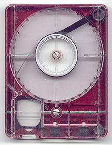
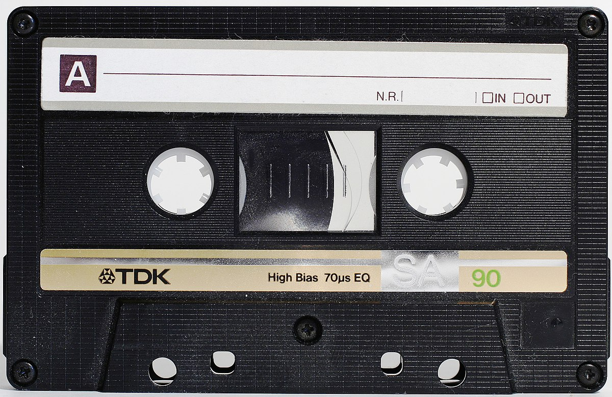

Music has Evolved
I believe we can agree as a society that music has changed immensely over the past 100 years. With major innovations in artistic expression and technology, new musical mediums, instruments, consumption methods, and genres have appeared. So what were the largests catalysts in musical culture and expression in the last 100 years?
Musical Mediums and Access
The world has changed drastically since the time of the phonographic cylinder. Today, you likely use Spotify or Apple Music to stream your favorite songs. The internet has likely been the most important change in musical medium and access to ever occur. Before the information age, music was expensive, less diverse, and harder to access. Successful small, independent artists and indie bands were extremely rare as they couldn't compete and usually died out due to needing large brand deals in order to cover the costs of manufacturing physical items for release. Now, with services like Bandcamp, small artists and labels can pay nominal fees to publish their music online. Below is a small timeline of musical mediums. Which one do you know best?

Vinyl
1895

4-Track
1962

Cassette
1963

CD
1982
MP3
1993
Napster
1999

Spotify
2006
Bandcamp
2008
Internet Subcultures
Internet subcultures have become an important part of music today.
Bonus: An interview with IndyAdvant
IndyAdvant, a writer, IT operator, and podcaster at Private Suite Magazine kindly accepted to answer some of the opinion questions I had for him in a casual story-time fashion.
▶
IndyAdvant Interview